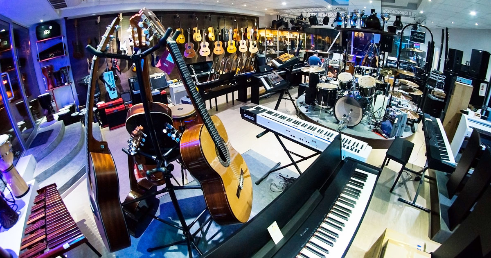

About Us
Here at Andertons Music Co. we take pride in offering a high level of customer service, ensuring that we provide only the best possible shopping experience for our customers. Selling gear from almost 400 brands, we have enough variety and choice of gear for anyone!
Founded in 1964 by current Managing Director Lee Anderton’s Father and Grandfather, Andertons Music Co. has remained a family business for over half a century. Primarily a place where local professional musicians could go to find the gear they needed, over time Andertons Music Co. has become a globally recognised brand in the internet era. With a reach extending well beyond the British Isles, we provide equipment for musicians of all ages and disciplines!
With four core departments, Guitar & Bass, Drums, Keyboards and Pro Audio, Andertons Music Co. caters for guitarists, bassists, drummers, pianists, singers, producers, beginners, pros... pretty much everyone! So make sure to take a look around our store in Guildford or online, and you'll see why we've become one of the most loved names in the industry!
do you want to know more? get registered!